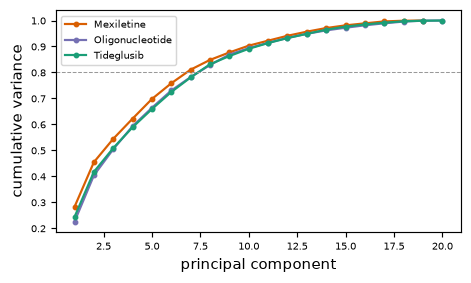

| Kickoff says | What we did | Where |
|---|---|---|
| Let the data characteristics drive the choice (sample size, covariates, relationships, outcome type) | Four-row trait table filled from train numbers | 4.1 |
| Simpler or penalised models suit small samples; plan encoding and variable selection | Decision paragraph and the method catalogue below | 4.2, 4.3 |
| Covariate modelling and machine learning are two tracks | Both tracks run in parallel on the same folds | 4.2 |
| Data trait | Kickoff asks | Mexiletine | Oligonucleotide | Tideglusib | Kickoff implication |
|---|---|---|---|---|---|
| Sample size | How many patients per arm? | n = 128 train patients per arm | n = 136 train patients per arm | n = 135 train patients per arm | Small: simpler or penalised models; small tuning grids |
| Covariates | How many, of what types? | p = 19 columns (11 numeric + 8 dummies); n/p = 6.7; responders/p = 1.9 | p = 20 columns (12 numeric + 8 dummies); n/p = 6.8; responders/p = 2.8 | p = 20 columns (12 numeric + 8 dummies); n/p = 6.8; responders/p = 3.2 | Plan encoding and variable selection |
| Relationships | Correlations or interactions? | 6 numeric pairs and 11 design pairs with |r| >= 0.5; max VIF 14.2 (Phenotype = juvenile onset); 4 columns with VIF > 5 | 5 numeric pairs and 9 design pairs with |r| >= 0.5; max VIF 12.9 (Phenotype = juvenile onset); 4 columns with VIF > 5 | 6 numeric pairs and 9 design pairs with |r| >= 0.5; max VIF 11.0 (Phenotype = juvenile onset); 6 columns with VIF > 5 | Methods that tolerate collinearity |
| Outcome type | Continuous or binary? | continuous (myotonia_change_12wk, SD 1.36) and binary label (29% responders) | continuous (qmt_change_26wk, SD 1.60) and binary label (41% responders) | continuous (tideglusib_composite, SD 3.01) and binary label (48% responders) | Match metrics to outcome |
p counts the model columns after dummy coding. VIF comes from the correlation matrix of the full train design. The unsupervised PCA (no outcome; full design) needs 7, 8 and 8 components to reach 80% of the variance (Mexiletine, Oligonucleotide, Tideglusib), so the design is not low-dimensional even though individual pairs are strongly correlated.

| Track | Method used | Why it fits |
|---|---|---|
| Covariate | lm / glm (all covariates) | Baseline effect sizes, all covariates in |
| Covariate | Stepwise, both directions, BIC | Narrow to a manageable set per arm |
| Covariate | Best subset (BIC, nvmax 10; continuous only) | Exhaustive search at p of about 20 |
| Covariate | Ridge / LASSO / elastic net | Correlated covariates, small n; sparse or shrunk |
| Covariate | GAM (smooths, k=5, REML) | Curvature (represents polynomial / piecewise / splines) |
| Covariate | PCA / PCR | Collapse correlated covariates |
| ML | Logistic regression (label only) | Transparent baseline |
| ML | Decision tree | Readable cut-offs |
| ML | Random forest | Interactions without specifying them |
| ML | SVM (RBF) | Curved boundaries |
| ML | KNN | Patients like you; sensitive to noise covariates |
| ML | XGBoost | Strong on tabular data; overfits small n |
| ML | MLP (16,) | Does a tiny network add value? |
Polynomial, piecewise, regression-spline and smoothing-spline models are represented by the single GAM (smooth terms with k=5), which covers curved effects in one fit. Forward/backward stepwise and AIC variants are not run separately; stepwise uses both directions with BIC. Every ML method appears as an untuned row (kickoff snippet settings) and a tuned row (small GridSearchCV).
AI tool disclosure (kickoff checklist): Claude Code (Anthropic) was used to write the analysis code (R and Python), to generate these pages, and to draft the text; every number on these pages is read from results/*.csv produced by the scripts in pdf_pipeline/src. Data are simulated; results do not describe real patients or approved therapies.